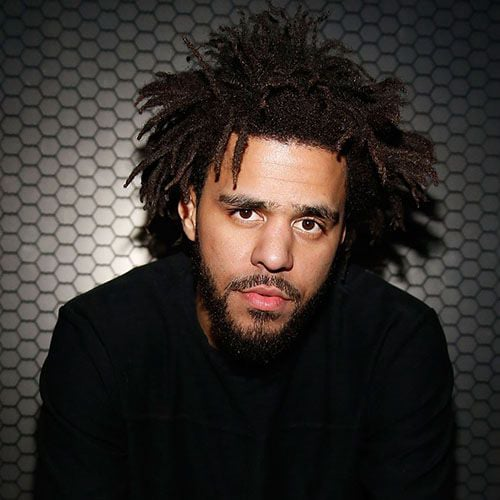

J. Cole
Born: 28 January 1985
Age:
Years Active: 2007–present
Genre/s: Southern hip-hop, pop rap, East Coast hip-hop, conscious hip-hop
Label/s: Dreamville, Roc Nation, Interscope, Columbia, ByStorm
Jermaine Lamarr Cole (born January 28, 1985) is an American rapper and record producer. Born on a military base in Germany and raised in Fayetteville, North Carolina, Cole initially gained attention as a rapper following the release of his debut mixtape, The Come Up, in early 2007. Intent on further pursuing a musical career, he signed with Jay-Z's Roc Nation in 2009 and released two additional mixtapes: The Warm Up (2009) and Friday Night Lights (2010) to further critical acclaim as he garnered a wider following.
Each of Cole's studio albums have peaked atop the US Billboard 200, beginning with his debut, Cole World: The Sideline Story (2011), and its follow-up, Born Sinner (2013). Both met with critical acclaim, the albums spawned the Billboard Hot 100-top 40 singles "Work Out", "Power Trip" (featuring Miguel), and "Crooked Smile" (featuring TLC). Despite commercial success, Cole departed from the pop-oriented sound of the albums in favor of conscious subject matter for his subsequent projects; themes of nostalgia, racial inequality, and materialism were explored respectively in his following releases: 2014 Forest Hills Drive (2014), 4 Your Eyez Only (2016) and KOD (2018). 4 Your Eyez Only yielded his furthest commercial success—selling an estimated 500,000 album-equivalent units in its first week, while the latter featured a then-record six simultaneous top 20 hits on the Billboard Hot 100—the first time a musical act achieved this feat since English rock band the Beatles in 1964. His sixth album, The Off-Season (2021), was met with continued success and spawned the single "My Life" (with 21 Savage and Morray), which peaked at number two on the Billboard Hot 100. Its chart success was matched by his guest appearance on the 2023 single "All My Life" by Lil Durk, and succeeded by his first song to top the chart, "First Person Shooter" by Drake that same year. His seventh album, marketed as his final album, The Fall-Off was released in 2026, and had several top-40 songs upon it's debut, with "Two Six" peaking at 16th on the Billboard Hot 100.
Self-taught on piano, Cole also acts as a producer alongside his recording career—having largely handled the production of his own projects—with credits on material for other artists, including Kendrick Lamar, Janet Jackson, Young Thug, Wale, and Mac Miller, among others. Cole's side ventures include his record label Dreamville Records, as well as its namesake media company and non-profit. The label, having signed artists including JID, Ari Lennox, Bas, and EarthGang, has released four compilation albums; their third, Revenge of the Dreamers III (2019), debuted atop the Billboard 200 and was nominated for Best Rap Album at the 62nd Annual Grammy Awards. In January 2015, Cole began housing single mothers rent-free at his childhood home in Fayetteville.
Cole has won two Grammy Awards from seventeen nominations, a Billboard Music Award for Top Rap Album, three Soul Train Music Awards, and eight BET Hip Hop Awards. Each of his albums—including Revenge of the Dreamers III—have received platinum certifications by the Recording Industry Association of America (RIAA). He is a minority owner of the Charlotte Hornets.

Two Six
J. Cole
Safety
J. Cole
Poor Thang
J. Cole
Who TF Iz U
J. Cole
The Let Out
J. Cole
Drum N Bass
J. Cole
Bombs In The Ville/Hit The Gas
J. Cole
29 Intro
J. Cole
39 Intro
J. Cole
The Fall-Off Is Inevitable
J. Cole
Life Sentence
J. Cole
Lonely At The Top
J. Cole
I Love Her Again
J. Cole
Man Up Above
J. Cole
Quik Stop
J. Cole

cLOUDs
J. Cole
Only You
J. Cole & Burna Boy
The Villest
J. Cole & Erykah Badu
Run A Train
J. Cole & Future
Old Dog
J. Cole & Petey Pablo
Legacy
J. Cole & PJ
Bunce Road Blues
J. Cole, Tems & Future